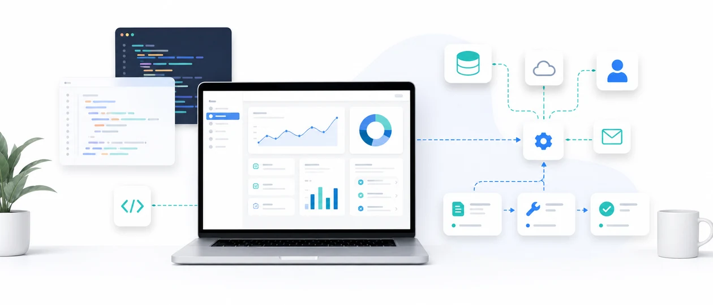

HP / LP 制作
スマホで見やすく、問い合わせにつながるホームページ・ランディングページを制作します。
「やったほうが良さそう」とは感じつつ、つい後回しになりがちなAI活用。
まずは“もやもや”を言葉にするところから始めましょう。
ニュースで話題のAI。便利そうだけど、自分の仕事にどう使えるのか、最初の一歩が見えない。
営業時間外の連絡、同じような質問への返信。本業の合間に対応していて、取りこぼしも心配。
事務作業や定型業務に時間を取られて、本当にやりたい仕事に集中できていない。
「つくって終わり」ではなく、相談から運用まで。お店・お仕事の規模に合わせて、必要なところだけ選べます。
スマホで見やすく、問い合わせにつながるホームページ・ランディングページを制作します。
よくある質問への自動応答や予約の一次受付を、24時間休まず行うチャットボットを構築します。
日々の繰り返し作業や資料づくりを、AIツールの活用で時短。仕組みづくりからお手伝いします。
「うちの場合は何ができる？」をいっしょに整理。導入後も気軽に相談できる伴走型のサポートです。

「こんなことできる？」のご相談から。既存サービスでは難しい、あなた専用の仕組みを開発します。
実際の相談に近い雰囲気で動くチャットです。サービス内容や進め方について、気になることを聞いてみてください。
回答は一般的な案内です。具体的なご相談はお問い合わせからどうぞ。
大きな制作会社とは少しちがう、“ひとり伴走者”だからできることがあります。
いきなり大きな投資は不要。必要な部分から少しずつ。手応えを確かめながら拡張できます。
「むずかしい話は苦手」で大丈夫。やさしい言葉でご説明し、運用が軌道に乗るまで並走します。
窓口は一人。やりとりがシンプルで、ちょっとした修正や相談にもスピーディーに対応できます。
流行りを追うだけでなく「あなたの仕事で本当に役立つか」を基準に、地に足のついた提案をします。
ご相談から納品・サポートまで。むずかしい手続きはありません。
フォームから無料でご連絡ください。やりたいこと・お悩みをお聞かせください。
オンライン等でくわしくお話を。現状と目標を整理します。
最適なプランとお見積りをご提示。ご納得いただいてから着手します。
進捗を共有しながら制作。途中の確認・修正も丁寧に。
公開して終わりではなく、運用が軌道に乗るまで伴走します。
まずは無料相談から。下記は最低料金の目安です（金額はサンプルです。内容に応じてお見積りします）。
内容や運用体制に合わせて、必要な範囲だけを組み合わせてご提案します。
本業ではフロントエンドエンジニアとして、使いやすい画面づくりやWebの仕組みづくりに携わっています。だからこそ、AIツールも“便利そう”で終わらせず、実際の仕事で使いやすい形に整えることを大切にしています。
小さなお店や個人事業の方が、問い合わせ対応や日々の作業を少しずつラクにできるように。専門用語はできるだけ使わず、相談から制作、運用までいっしょに伴走します。
「こんなこと聞いてもいいのかな？」という小さな疑問でも大歓迎です。売り込みはしませんので、安心してお問い合わせください。